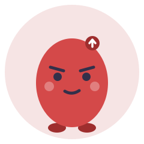

INTJ — Architect
INTJ — 建築家
INTP — Logician
INTP — 論理学者
ENTJ — Commander
ENTJ — 指揮官
ENTP — Debater
ENTP — 討論者
INFJ — Advocate
INFJ — 提唱者
INFP — Mediator
INFP — 仲介者
ENFJ — Protagonist
ENFJ — 主人公
ENFP — Campaigner
ENFP — 運動家
ISTJ — Logistician
ISTJ — 管理者
ISFJ — Defender
ISFJ — 擁護者
ESTJ — Executive
ESTJ — 幹部
ESFJ — Consul
ESFJ — 領事

ISTP — Virtuoso
ISTP — 巨匠

ISFP — Adventurer
ISFP — 冒険家

ESTP — Entrepreneur
ESTP — 起業家
ESFP — Entertainer
ESFP — エンターテイナー

Type 1 — The Reformer
タイプ1 — 改革する人
Type 2 — The Helper
タイプ2 — 助ける人

Type 3 — The Achiever
タイプ3 — 達成する人

Type 4 — The Individualist
タイプ4 — 個性的な人
Type 5 — The Investigator
タイプ5 — 調べる人
Type 6 — The Loyalist
タイプ6 — 忠実な人
Type 7 — The Enthusiast
タイプ7 — 熱中する人

Type 8 — The Challenger
タイプ8 — 挑戦する人
Type 9 — The Peacemaker
タイプ9 — 平和をもたらす人
Creative Innovator
創造的イノベーター
Analytical Expert
分析的専門家
Social Contributor
社会的貢献者
Organizational Manager
組織的マネージャー

Independent Entrepreneur
独立起業家
Stable Worker
安定実務者

Growth Challenger
成長挑戦者
Balanced Type
バランス型